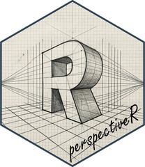

R htmlwidgets binding for the FINOS Perspective library – a high-performance WebAssembly-powered data visualization engine with interactive pivot tables and multiple chart types.
Installation
# Install from CRAN
install.packages("perspectiveR")
# Or install the development version from GitHub
remotes::install_github("EydlinIlya/perspectiveR")Quick Start
library(perspectiveR)
# Interactive data grid with full self-service UI
perspective(mtcars)
# Bar chart grouped by cylinder count
perspective(mtcars, group_by = "cyl", plugin = "Y Bar")
# Filtered scatter plot
perspective(iris,
columns = c("Sepal.Length", "Sepal.Width", "Species"),
filter = list(c("Species", "==", "setosa")),
plugin = "Y Scatter"
)Features
- Multiple visualization types: Datagrid, bar, line, area, scatter, heatmap, treemap, sunburst, and more
- Self-service interactive UI: Drag-and-drop columns, switch chart types, add filters/sorts/pivots, create computed expressions
- High performance: WebAssembly-powered compute engine runs entirely in the browser
-
Shiny integration: Output/render bindings plus proxy interface for streaming data updates, indexed/keyed tables, rolling-window tables (
limit), data export, table metadata queries, and state save/restore -
Filter operator: Combine multiple filters with
filter_op = "and"orfilter_op = "or" -
Arrow IPC support: Optional
arrowpackage integration for efficient serialization of large datasets - Works everywhere: RStudio Viewer, R Markdown, Quarto, and Shiny
Examples
Pivot tables with aggregation
Summarize data by grouping rows and splitting columns, with custom aggregates:
# Average horsepower by cylinders and transmission type
perspective(mtcars,
columns = c("hp", "mpg", "wt"),
group_by = "cyl",
split_by = "am",
aggregates = list(hp = "avg", mpg = "avg", wt = "sum"),
plugin = "Datagrid"
)Computed expressions
Create derived columns using Perspective’s expression language:
# Compute power-to-weight ratio and bin it
perspective(mtcars,
expressions = c(
'"hp_per_ton" = "hp" / ("wt" * 1000)',
'"efficiency" = if ("mpg" > 25) { "high" } else { "low" }'
),
columns = c("hp", "wt", "mpg", "hp_per_ton", "efficiency"),
group_by = "efficiency",
plugin = "Y Bar"
)3D rendering with expressions
Render a 3D torus entirely in Perspective’s expression engine — only the parametric angles come from R, while all geometry and shading math runs in WebAssembly (a hat-tip to the classic donut.c):
# 3D donut — geometry computed in Perspective's expression engine
torus <- expand.grid(
u = seq(0, 2 * pi, length.out = 80),
v = seq(0, 2 * pi, length.out = 80)
)
perspective(torus,
expressions = c(
'"x" = (2 + cos("v")) * cos("u")',
'"y" = (2 + cos("v")) * sin("u")',
'"shade" = cos("v") * sin("u") + sin("v")'
),
columns = c("x", "y", "shade"),
plugin = "XY Scatter",
theme = "Pro Dark",
settings = FALSE,
title = "Donut"
)Add streaming rotation in Shiny — see run_example("spinning-donut").
Chart types
Perspective supports a wide range of chart types:
# Line chart — time series
perspective(EuStockMarkets,
plugin = "Y Line",
title = "European Stock Indices"
)
# Heatmap — correlation-style view
perspective(mtcars,
group_by = "cyl",
split_by = "gear",
columns = c("mpg", "hp", "wt"),
plugin = "Heatmap"
)
# Sunburst — hierarchical breakdown
perspective(mtcars,
group_by = c("cyl", "gear", "am"),
columns = "mpg",
plugin = "Sunburst"
)Themes
Nine built-in themes for light and dark environments:
# Dark mode with Monokai theme
perspective(iris,
plugin = "Y Scatter",
theme = "Monokai",
title = "Iris Measurements"
)
# Available themes: "Pro Light" (default), "Pro Dark", "Monokai",
# "Solarized Light", "Solarized Dark", "Vaporwave", "Dracula",
# "Gruvbox", "Gruvbox Dark"Editable datagrid
Enable inline editing for manual data entry or corrections:
perspective(data.frame(
Task = c("Review PR", "Write tests", "Deploy"),
Status = c("Done", "In Progress", "Pending"),
Owner = c("Alice", "Bob", "Carol")
),
editable = TRUE,
title = "Task Tracker"
)Shiny Demos
Three interactive demos are bundled with the package:
library(perspectiveR)
run_example() # list all available demos
run_example("shiny-basic")
run_example("crud-table")
run_example("spinning-donut")- shiny-basic — Streaming stock market line chart (DAX, SMI, CAC, FTSE 1991-1998) with a 100-row sliding window, Arrow IPC toggle, computed columns, and named state save/restore.
- crud-table — Editable indexed CRUD table with click events, add/update/delete rows by key, downloadable CSV/JSON export, and an update activity log.
- spinning-donut — Animated 3D torus with all geometry computed in Perspective’s expression engine and rotation driven by streaming data updates.
Shiny Usage
library(shiny)
library(perspectiveR)
ui <- fluidPage(
selectInput("dataset", "Dataset:",
choices = c("mtcars", "iris", "airquality")
),
perspectiveOutput("viewer", height = "600px")
)
server <- function(input, output, session) {
output$viewer <- renderPerspective({
data <- switch(input$dataset,
"mtcars" = mtcars,
"iris" = iris,
"airquality" = airquality
)
perspective(data)
})
}
shinyApp(ui, server)Proxy Functions
-
psp_update(proxy, data)— append new rows (upserts when table has an index) -
psp_replace(proxy, data)— replace all data -
psp_clear(proxy)— clear all rows -
psp_restore(proxy, config)— apply a saved config -
psp_reset(proxy)— reset viewer to defaults -
psp_remove(proxy, keys)— remove rows by primary key (indexed tables) -
psp_export(proxy, format)— export data (JSON, CSV, columns, or Arrow); supports windowed export withstart_row/end_row/start_col/end_col -
psp_save(proxy)— retrieve current viewer state -
psp_on_update(proxy, enable)— subscribe to data change events -
psp_schema(proxy)— get table schema (column names and types) -
psp_size(proxy)— get table row count -
psp_columns(proxy)— get table column names -
psp_validate_expressions(proxy, expressions)— validate expression strings
Related Projects
- Perspective — the upstream WebAssembly data visualization engine this package wraps
- GWalkR — interactive data exploration widget powered by Graphic Walker
- esquisse — drag-and-drop ggplot2 builder as a Shiny module
License
Apache License 2.0
‘Perspective’ is a project of the OpenJS Foundation. perspectiveR is an independent community package and is not affiliated with or endorsed by the OpenJS Foundation.